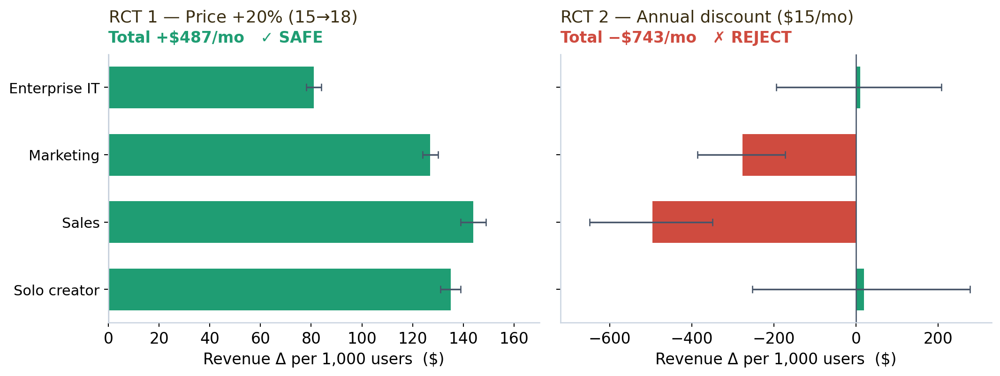

Part of BeeSignal — a pricing-research engine that runs experiments on LLM-generated synthetic consumers.
Every SaaS team has the same two arguments on repeat. Can we raise the price without bleeding users? And should we push everyone toward annual billing? The usual answers are a confident PM’s gut, a competitor screenshot, or — if you’re disciplined — a live experiment that puts real revenue at risk for a month.
Here I take a real product (Loom, the async-video tool) and answer both questions with two randomized controlled trials run entirely on simulated buyers — for about the price of a coffee. The fun part isn’t just the recommendations; it’s that the synthetic respondents reproduce known human behavior, which is what makes the method worth trusting at all.
What is a “synthetic RCT,” exactly?
Two ideas combine here, and both deserve a plain-English version.
Synthetic respondents. Instead of recruiting humans, BeeSignal has a large language model role-play each buyer. You hand the model a detailed persona — “you’re a sales manager at a 50-person company, budget $500–2,000/month for tools, you care about tracking whether prospects watch your videos” — and it answers as that person. Hundreds of personas, sampled to match a real target market, become a synthetic respondent pool for cents instead of tens of thousands of dollars. (Getting these personas to behave realistically is its own challenge — a previous post is a post-mortem of what happens when they behave too perfectly.)
A vignette RCT. A randomized controlled trial is the cleanest way to establish cause and effect: split your subjects at random into two groups, change exactly one thing for one group, and compare. It’s the A/B test, formalized. A vignette RCT does this with a short written scenario — each respondent reads one version (“Loom Business is $15/mo” vs “Loom Business is $18/mo”) and reacts. Because the two groups are otherwise identical by construction, any difference in their reactions is caused by the price change. Nothing to confound.
Put them together and you get something genuinely new: causal experiments on a simulated population. You can A/B test a pricing decision before it touches a single real customer — and rerun it as many times as you like.
RCT 1 — Can Loom raise its price 20%?
The treatment: Business tier from $15/mo → $18/mo (a 20% increase). Control sees $15, treatment sees $18, nothing else changes.
The demand response is exactly what economics predicts — and precisely estimated. Purchase intent drops (−0.205, p < 0.001, a moderate-to-large effect of Cohen’s d = −0.56) and churn risk rises (+0.204). Buyers like the higher price less and are likelier to leave. No surprise there. The real question is whether the extra 20% you charge the survivors outweighs the ones you lose.
So I translate intent into money. The break-even churn for a 20% increase is
\text{break-even churn} = 1 - \frac{15}{18} = 16.7\%,
map the churn scores to churn probabilities through a calibrated curve, and propagate the causal-forest confidence intervals all the way to revenue, segment by segment:
| Segment | Weight | Revenue Δ (per 1,000 users) | 95% CI | Verdict |
|---|---|---|---|---|
| enterprise_it | 15% | +$81 | [+78, +84] | SAFE |
| marketing_team | 20% | +$127 | [+124, +130] | SAFE |
| sales_team | 30% | +$144 | [+139, +149] | SAFE |
| solo_creator | 35% | +$135 | [+131, +139] | SAFE |
| Total | +$487/mo (+5.4%) | [+472, +501] | SAFE |
The verdict: raise it. Even after losing ~74 of every 1,000 users, the flat $18 price is revenue-positive in every segment, with a confidence interval that never crosses zero. The heterogeneity is sensible too — solo creators are the most price-sensitive (−7.6% intent), sales teams the least (−3.0%), because the tool is mission-critical to the latter.
RCT 2 — Should Loom push annual billing?
The treatment: the same product, framed two ways — $18/mo month-to-month (control) vs $180/yr = $15/mo effective with a 12-month commitment (treatment). Same dollars on the table; only the billing frame and the $3/mo “annual discount” change.
Here the synthetic buyers reveal a genuine behavioral effect: annual framing makes them more likely to commit (purchase intent +0.182, p < 0.001) and less likely to churn (−0.109) — the commitment-and-discount pattern that behavioral economics documents in real humans, reproduced here without a single real respondent. The segment split is striking: enterprise IT (+11.7%) and solo creators (+9.0%) love the annual deal, while sales and marketing teams barely react (+0.6%, +1.0%) — they were already going to buy.
And that heterogeneity is the whole story, because the revenue math delivers a twist — best seen side by side with RCT 1:

Despite higher conversion and lower churn, the annual discount destroys −$743/mo per 1,000 users. Why? Sales and marketing teams already convert at ~89% on monthly — handing them a 20% discount is pure giveaway. The right move is monthly $18 as the default, annual as an opt-in that self-selects commitment-oriented buyers, with the $3/mo gap reframed not as a discount but as a 20% lock-in premium people pay for month-to-month flexibility. If you test the annual nudge anywhere, test it on enterprise IT and solo creators — the only two segments whose interval even touches positive.
Why these two belong together
Run alone, each trial is a tidy result. Run together, they make a sharper point: identical methodology, opposite recommendations. A 20% price hike — which feels aggressive — is safe and revenue-positive. An annual discount — which feels generous and customer-friendly — destroys margin everywhere except two segments. Intuition gets both backwards; the randomized design and the revenue translation get both right.
And the credibility comes from the behavior, not the prose. The synthetic buyers show downward-sloping demand in RCT 1 and commitment-framing effects in RCT 2 — two well-established human patterns — with effect sizes large enough to estimate cleanly and segment heterogeneity that matches business intuition. That’s the bar a synthetic-respondent method has to clear before anyone should trust it: not “did it produce a number,” but “did it reproduce a known effect.”
Honest limitations
These are simulated consumers, not humans, and I’d treat the output as directional decision support, not ground truth. The revenue layer leans on a calibrated mapping from intent scores to churn/conversion probabilities, which is itself an assumption. Willingness-to-pay even behaves oddly in RCT 2 — the annual arm states a lower max WTP while it converts better, a reminder that stated WTP and revealed choice diverge in synthetic respondents as in real ones. What synthetic RCTs buy you is speed and safety: you can pre-screen a dozen pricing ideas for a few dollars, kill the obviously bad ones, and walk into a real experiment already knowing which lever to pull — instead of spending a quarter and real customer goodwill to discover the annual discount was a mistake.